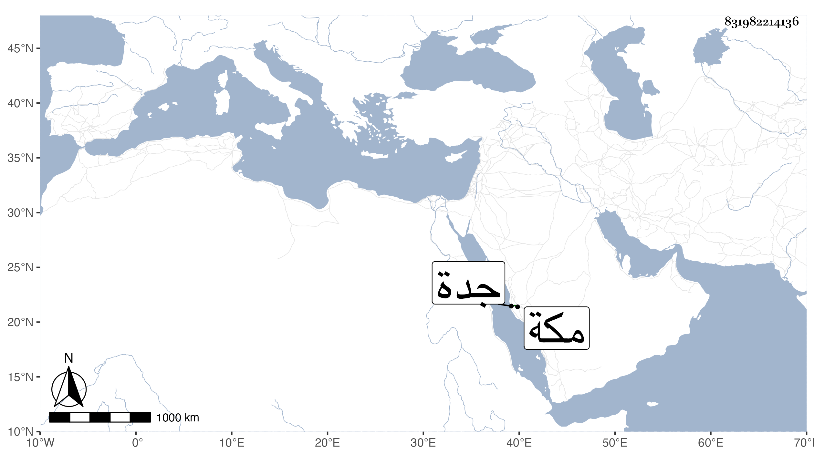

0902Sakhawi.DawLamic.ITO20230111-ara1.EIS1600.831982214136
Biography ID: 831982214136
529
محمد الجمال أبو السعود بن ظهيرة أخو اللذين قبله ، أمه كمالية ابنة علي بن أحمد النويري . ولد في سنة ست عشرة وثمانمائة بمكة ونشأ بها فحفظ القرآن وبعض الحاوي وسمع ابن الجزري والتقى الفاسي وجماعة وأجاز له حفيدا بن مرزوق والنور المحلي وغير واحد، وناب في القضاء بجدة عن أخيه أبي السعادات . ومات في جمادى الآخرة سنة خمس وخمسين غفر له .
